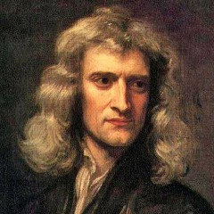

- Nicolaus Copernicus

- In 16th century Poland, astronomer Nicolaus Copernicus (1473–1543) proposed a model of the solar system that involved the Earth revolving around the sun. The model wasn't completely correct, as astronomers of the time struggled with the backwards path Mars sometimes took, but it eventually changed the way many scientists viewed the solar system. Copernicus finished the first manuscript of his book, "De Revolutionibus Orbium Coelestium" ("On the Revolutions of the Heavenly Spheres") in 1532. In it, Copernicus established that the planets orbited the sun rather than the Earth. He laid out his model of the solar system and the path of the planets. He didn't publish the book, however, until 1543, just two months before he died. He diplomatically dedicated the book to Pope Paul III. The church did not immediately condemn the book as heretical, perhaps because the printer added a note that said even though the book's theory was unusual, if it helped astronomers with their calculations, it didn't matter if it wasn't really true, according to Famous Scientists. It probably also helped that the subject was so difficult that only highly educated people could understand it. The Church did eventually ban the book in 1616.
- Johannes Kepler

- Using detailed measurements of the path of planets kept by Danish astronomer Tycho Brahe, Johannes Kepler (1571–1630) determined that planets traveled around the sun not in circles but in ellipses. In so doing, he calculated three laws involving the motions of planets that astronomers still use in calculations today However, closed minds put Kepler's work at risk. Born in December 1571, in Weil der Stadt in Swabia, in southwest Germany, young Johannes Kepler was a sickly child of poor parents. He was awarded a scholarship to the University of Tübingen, where he studied to become a Lutheran minister. While there, he was introduced to the work of Nicolaus Copernicus, who had written that the planets orbited the sun rather than Earth. In 1594, Kepler became a professor of mathematics at a seminary in Graz, Austria, as well as district mathematician and calendar maker. In search of the most detailed notes about the paths of the planets, Kepler contacted astronomer Tycho Brahe. A wealthy Danish nobleman, Brahe built an observatory in Prague where he tracked the motions of the planets and maintained the most accurate observations of the solar system at the time. In 1600, Brahe invited Kepler to come work with him.
- Galileo Galilei
- Born in Italy, Galileo Galilei (1564–1642) is often credited with the creation of the optical telescope, though in truth he improved on existing models. The astronomer (also mathematician, physicist and philosopher) turned the new observational tool toward the heavens, where he discovered the four primary moons of Jupiter (now known as the Galilean moons), as well as the rings of Saturn. Galileo is often incorrectly credited with the creation of a telescope. (Hans Lippershey applied for the first patent in 1608, but others may have beaten him to the actual invention.) Instead, he significantly improved upon them. In 1609, he first learned of the existence of the spyglass, which excited him. He began to experiment with telescope-making, going so far as to grind and polish his own lenses. His telescope allowed him to see with a magnification of eight or nine times. In comparison, spyglasses of the day only provided a magnification of three. It wasn't long before Galileo turned his telescope to the heavens. He was the first to see craters on the moon, he discovered sunspots, and he tracked the phases of Venus. The rings of Saturn puzzled him, appearing as lobes and vanishing when they were edge-on — but he saw them, which was more than can be said of his contemporaries.
- Isaac Newton
- 
- Sir Isaac Newton contributed significantly to the field of science over his lifetime. He invented calculus and provided a clear understanding of optics. But his most significant work had to do with forces, and specifically with the development of a universal law of gravity. He calculated three laws describing the motion of forces between objects, known today as Newton's laws. As a student, Newton studied the most advanced mathematical texts of his time. While on hiatus, he continued to study mathematics, laying the ground for differential and integral calculus. He united many techniques that had previously been considered seperately, such as finding areas, tangents, and the lengths of curves. He wrote De Methodis Serierum et Fluxionum in 1671, but was unable to find a publisher. Newton also established a cohesive scientific method, to be used across disciplines. Previous explorations of science varied depending on the field. Newton established a set format for experimentation still used today.
- Albert Einstein
- In the early 20th century, German physicist Albert Einstein (1879–1955) became one of the most famous scientists ever after proposing a new way of looking at the universe that went beyond current understanding Einstein suggested that the laws of physics are the same throughout the universe, that the speed of light in vacuum is constant, and that space and time are linked in an entity known as space-time, which is distorted by gravity. A major validation of Einstein's work came in 1919, when Sir Arthur Eddington, secretary of the Royal Astronomical Society, led an expedition to Africa that measured the position of stars during a total solar eclipse. The group found that the position of stars was shifted due to the bending of light around the sun. (In 2008, a BBC/HBO production dramatized the story in "Einstein and Eddington."). Einstein remained in Germany until 1933, when dictator Adolf Hitler rose to power. The physicist then renounced his German citizenship and moved to the United States to become a professor of theoretical physics at Princeton. He became a U.S. citizen in 1940 and retired in 1945.
- Edwin Hubble

- American astronomer Edwin Hubble (1899–1953) calculated that a small blob in the sky existed outside of the Milky Way. Prior to his observations, the discussion over the size of the universe was divided as to whether or not only a single galaxy existed. Hubble went on to determine that the universe itself was expanding, a calculation which later came to be known as Hubble's law. Hubble's observations of the various galaxies allowed him to create a standard system of classification still used today. In the 1920s, the small, diffuse patches in the sky were termed nebulae, and were thought to exist within the Milky Way. While examining images of NGC 6822, M33 and M31 individually, Hubble noticed a pulsating star known as a Cepheid variable inside each one. Cepheids are special because their pulsation allows for precise measurements of distance. Hubble calculated how far away each Cepheid lay — and thus how far to each nebula — and realized they were too distant to be inside of the Milky Way. Astronomers realized that these nebulae were in fact galaxies like the Milky Way, each containing billions of stars. The universe, once thought to be contained by the Milky Way, expanded significantly in the eyes of astronomers.